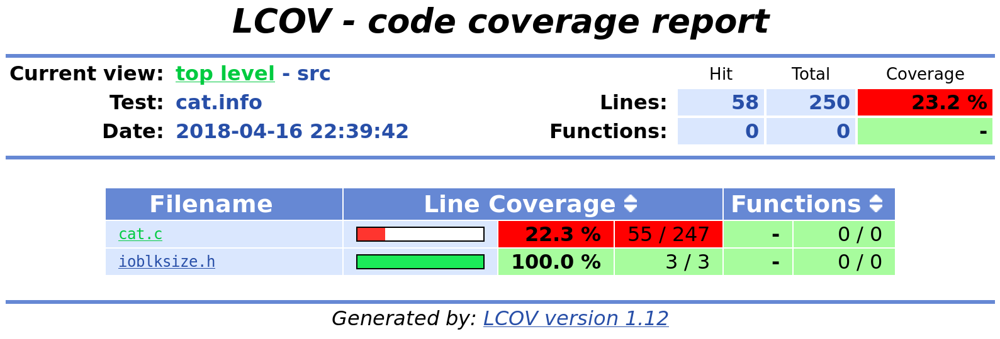
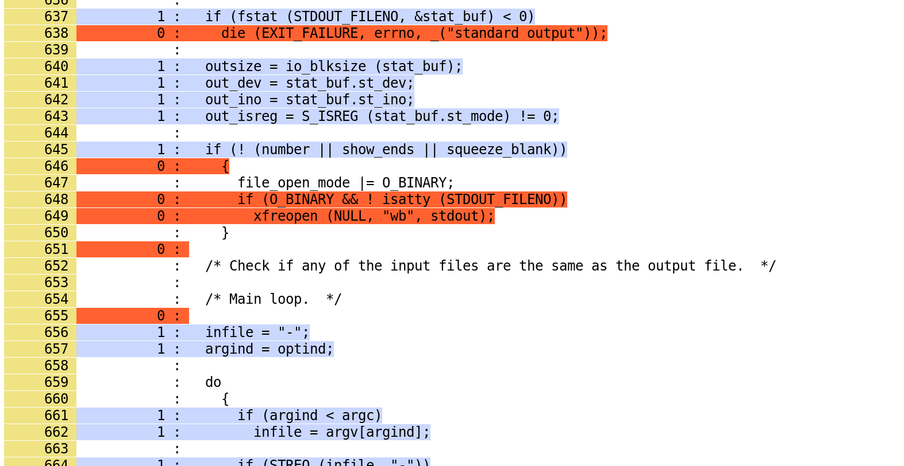
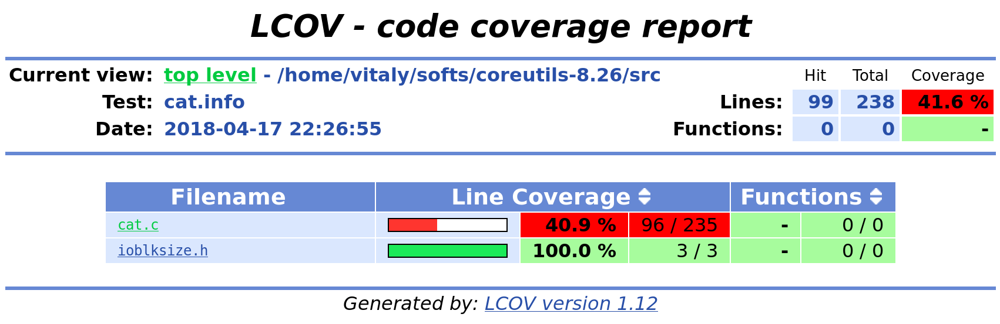
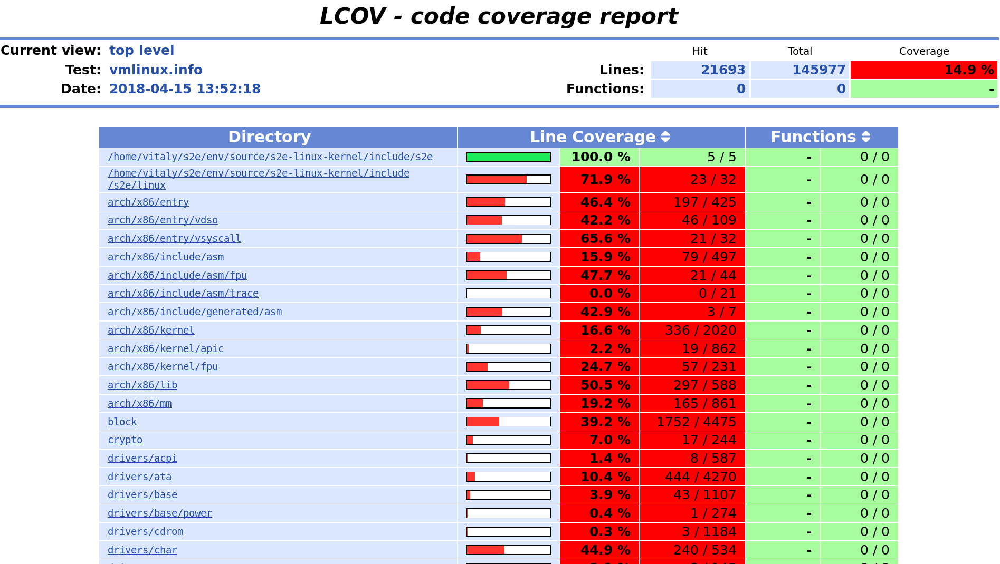

Measuring code coverage with S2E¶
In this tutorial, you will learn how to measure code coverage of binaries on various OSes with S2E. Here are some advantages of using S2E for that:
- You do not have to recompile your binaries with GCOV support or similar in order to get code coverage. You do not even need debug information if all you want is basic block coverage.
- You can get code coverage for any part of the software stack (program, library, kernel modules, and even the kernel itself).
- You can get LCOV HTML reports when source code is available and the binary has suitable debug information
- You can get basic block coverage reports integrated with IDA or Radare.
- You do not even need to use symbolic execution. You could use S2E as a powerful single-path coverage tool.
This tutorial covers the following topics:
- How to configure S2E to record line and basic block coverage
- How to generate HTML reports with LCOV
- Examples for Linux and Windows covering programs, libraries, and kernel drivers
- How S2E records coverage information under the hood so that you can extend it for your own needs
Note
This tutorial assumes that you know how to set up and run simple binaries in S2E. If not, please refer to the s2e-env documentation to get started.
Only basic block and line coverage is supported. Branch and function coverage is work in progress and are not supported yet.
Contents
Line coverage for Linux binaries¶
We will use GNU Core Utilities to illustrate how to get
code coverage for Linux binaries. Coreutils are the basic file, shell and text
manipulation utilities of the GNU operating system. This part of the tutorial walks you through the process of using
S2E to analyze the cat program and generate basic block and line coverage information.
Building Coreutils¶
The first step is to build the coreutils package. In this tutorial, we will use version 8.26 . We will build a 32-bit version of Coreutils with debug symbols (so that we can generate line coverage).
wget https://ftp.gnu.org/gnu/coreutils/coreutils-8.26.tar.xz
tar xf coreutils-8.26.tar.xz
cd coreutils-8.26
mkdir build
cd build
../configure CFLAGS="-g -m32" --prefix=$(pwd)
make
make install
The coreutils programs will be available in coreutils-8.26/build/bin.
Running Coreutils concretely in S2E¶
Run the following command in order to create a cat project. This will instruct S2E to run cat and display
the contents of /etc/fstab. For the sake of simplicity, no symbolic execution will occur here (as the file
is concrete and we will not instruct S2E to make it symbolic).
s2e new_project --image debian-9.2.1-i386 /path/to/coreutils-8.26/build/bin/cat /etc/fstab
After creating the project, run S2E. This should take a few seconds and terminate.
cd projects/cat
./launch.s2e.sh
Generating line coverage¶
s2e-env generates line coverage information in the lcov format.
The following command will generate an HTML report.
s2e coverage lcov --html cat
This will generate the following in projects/cat/s2e-last:
- A
cat.infofile containing the line coverage information in lcov format - An HTML report in the
cat_lcovdirectory
The image below shows a snippet from the generated HTML report:
 {kind=link}
{kind=link}
Note
At the moment, S2E does not generate branch coverage or function coverage information, so these will be missing from the report.
{kind=link}
Basic block coverage¶
Sometimes, you do not have source code or debug information. In this case, you can use S2E to compute basic block coverage.
s2e-env provides a subcommand that generates basic block coverage. This subcommand requires either IDA Pro, Radare
or Binary Ninja to disassemble the target binary and extract the basic blocks from it. The different disassemblers have
different requirements.
- Ida Pro: You must specify the path to its location
s2e-envconfig file. - Radare: Radare must be installed into a location on your path and you must have the
r2pipePython package installed via pip (see here for details). - Binary Ninja: You must have a Binary Ninja license that allows “GUI-less processing”.
In order to produce this basic block listing you can run one of the following commands:
s2e coverage basic_block --disassembler=ida cats2e coverage basic_block --disassembler=r2 cats2e coverage basic_block --disassembler=binaryninja cat
The basic block coverage subcommand will perform a block coverage analysis on s2e-last in the cat project by
mapping translation block coverage generated by the TranslationBlockCoverage plugin to the basic block information
extracted by your disassembler. The result will be written to projects/cat/s2e-last/cat_coverage.json, part of
which is shown below.
{
"coverage": [
{
"end_addr": 134516923,
"function": "__do_global_dtors_aux",
"start_addr": 134516916
},
{
"end_addr": 134516165,
"function": ".__fpending",
"start_addr": 134516160
},
{
"end_addr": 134515758,
"function": ".init_proc",
"start_addr": 134515754
},
...
],
"stats": {
"covered_basic_blocks": 215,
"total_basic_blocks": 1456
}
}
Later we will show how you can use this basic block coverage together with your chosen disassembler.
Code coverage during symbolic execution¶
So far, we have seen how to get code coverage in concrete single-path executions. Everything works the same
when symbolic execution is enabled. Each path will get its own coverage file and s2e-env will automatically
aggregate all of them to produce a coverage report. In this section, we will configure cat to use symbolic
inputs and will measure the corresponding increase in coverage.
First, create a new project called cat-symb as follows. This will re-generate a new configuration for cat
with symbolic execution enabled. The project that you generated earlier in this tutorial is preserved in the cat
folder.
s2e new_project -n cat-symb --image debian-9.2.1-i386 /path/to/coreutils-8.26/build/bin/cat -T @@
The @@ symbol tells s2e-env to generate a bootstrap file that will run cat with a symbolic file as input.
By default this symbolic file will be a 256 byte file filled with null bytes as concolic values.
The -T option forces cat to display TAB characters (0x09). This is important because it forces cat to read
the symbolic values and fork two states - one state for the character being a TAB and another state for a character
being a non-TAB.
To make symbolic execution a bit more interesting for cat, we will have to modify this symbolic file slightly.
Instead of having the symbolic file filled with null bytes, we will add some actual text to the file to make it
more representative of using cat. Open bootstrap.sh and replace truncate -s 256 ${SYMB_FILE} with:
python -c "print 'A' * 8" > ${SYMB_FILE}
Then run S2E for a moment and terminate it.
cd projects/cat-symb && ./launch-s2e.sh
# ...
# Terminate S2E after a while
killall -9 qemu-system-i386
Finally, get the code coverage:
s2e coverage lcov --html cat-symb
Compare the obtained results with the previous single-path run. Line coverage percentage should be higher.
{kind=link}
Now generate the basic block coverage (using your chosen disassembler, in this case IDA Pro):
s2e coverage basic_block --disassembler=ida cat-symb
You can then use this data for further analysis. For example, the S2E tools contain an IDA Pro script to highlight the basic blocks
covered by S2E during analysis. This script can be found at install/bin/ida_highlight_basic_blocks.py in your S2E
environment. To run the script, open the cat binary in IDA Pro, select “Script file” from the “File” menu and open
install/bin/ida_highlight_basic_blocks.py. You will be prompted for the basic_block_coverage.json file generated
by S2E. Select this file and the basic blocks executed by S2E will be colored green. Depending on how long you let S2E
run for and how many translation blocks it executed, you should get a graph similar to the following:
{kind=link}
Examining the debug log in s2e-last/debug.txt you should see a fork at address 0x8049ADE. If you look at this
address in IDA Pro, you should see a cmp [ebp+ch_0], 9 at the previous instruction (address 0x8049ADA). This is
cat checking if the current character is a TAB or not (as previously mentioned the ASCII value for TAB is 0x09).
Because the file contains symbolic data, a fork will occur at the jnz instruction.
Similarly, Radare can be used to annotate the basic blocks covered by S2E with metadata. This script can be found at
install/bin/r2_highlight_basic_blocks.py in your S2E environment. To run the script, open the cat binary in
Radare as follows:
r2 -i install/bin/r2_highlight_basic_blocks.py projects/cat-symb/cat
You will be prompted for the basic_block_coverage.json file generated by S2E. Enter the path to this file and the
basic blocks executed by S2E will be annotated with a Covered by S2E comment. The image below illustrates this.
{kind=link}
How does S2E record and compute coverage?¶
In this section, we will take a step back and explain at a high level what components of S2E are involved to generate coverage. This is useful in case you would like to extend S2E to generate other types of coverage.
S2E takes as input a virtual machine and a configuration file, and outputs JSON files that contain a list of
executed program counters that belong to the modules specified in the configuration file. A module is essentially
a binary file that can be loaded and executed by the guest OS (.exe, .so, .dll, etc.),
whether in user or kernel space.
S2E relies on three plugins to generate coverage data: an OS monitor, a module execution detector, and
a coverage generator plugin. These plugins are all enabled by default in s2e-config.lua when creating a project
with s2e-env. The job of the OS monitor (e.g., WindowsMonitor or LinuxMonitor) is to monitor various
system events, such as module loads/unloads, and notify any interested plugins about them. One such plugin is the
module execution detector (ModuleExecutionDetector). This plugin reacts to events from the OS monitor
in order to notify its own clients about instructions executed by the modules of interest. The module execution
detector filters out all the other instructions that do not belong to the modules of interest. Finally, the code
coverage plugin (i.e., TranslationBlockCoverage) connects to the module execution detector plugin in order to
record executed instructions.
The S2E coverage plugin records coverage during code translation rather than code execution in order to be more
efficient. The S2E execution engine continuously fetches blocks of guest code, translates them to host code, and
packages this host code into translation blocks. S2E stores translation blocks in a cache in order to avoid redundant
translations and speed up execution (e.g., if guest code executes a loop). The TranslationBlockCoverage plugin
listens for guest code translation events and records the start and end address of the block, as well as the size
of the block. S2E however only provides raw virtual addresses and the coverage plugin must first convert them to
addresses that are relative to the module’s base address. TranslationBlockCoverage calls ModuleExecutionDetector
in order to do the conversion. After that, it records the converted addresses in the JSON file. This conversion is
important, as raw virtual addresses may be different from run to run (relocations, ASLR, etc.).
Generating basic block coverage requires an off-line conversion step from translation blocks to basic blocks. A translation block (TB) is a sequence of instructions that ends with a control flow change (e.g., call, jump). A basic block (BB) is a translation block with the additional constraint that it may have only one entry. As a result, a TB may span one or more BBs. A TB may also start in the middle of a basic block due to how the code translator works (a TB may be interrupted at any time by an exception, and when execution returns, the translator starts a fresh TB from the current program counter). The conversion will therefore take one TB and output all the BBs it overlaps. This set of covered BBs will then be compared to the total set of BBs of the module in order to compute basic block coverage.
Generating line coverage is simpler: just translate each address in [tb_start, tb_start + tb_size[ to a source
file, line number, and function name using the debug information. s2e-env relies on the DWARF information stored
in the binary in order to get this information and package it into a coverage file understood by LCOV.
Note
TranslationBlockCoverage only supports line/basic block coverage. It does not support branch coverage yet.
A branch coverage plugin would have to instrument branch instructions and record their outcome. The plugin
would listen to code translation events, check if the translated instruction is a branch, and if so insert
instrumentation code. This code would then determine the (source_pc, target_pc) pair and record it in the
coverage file. source_pc is the address of the current branch instruction and target_pc is already
stored in the program counter register when the instrumentation runs.
Line coverage for the Linux kernel¶
The Linux kernel is just another module as far as S2E is concerned. Recording coverage for it works like for any other program.
Warning
Make sure you build S2E images yourself. Do not use the pre-built ones as the source information will not match the Linux source on your system and the coverage report may be empty.
Create a new project or pick an existing one. The analysis target does not matter, so you may also create an empty project. In your S2E environment:
s2e new_project -n linux-kernel -i debian-9.2.1-x86_64 --no-target --type linuxAdd
vmlinuxto theModuleExecutionDetectorplugin configuration:s2e-config.lua¶add_plugin("ModuleExecutionDetector") pluginsConfig.ModuleExecutionDetector = { mod_vmlinux = { moduleName = "vmlinux", } }
Open
bootstrap.shand add the following commands right before the kill state command at the end of the script:bootstrap.sh¶... # Flush the CPU translation block cache. # This ensures that the code coverage plugin catches as much of the kernel as possible. # Omitting it may under-report coverage. # This command may go anywhere, but generally right before your workload. ${S2ECMD} flush_tbs # Run a kernel-intensive utility here find /usr # Kill states before exiting ${S2ECMD} kill $? "Target execution terminated"
Alternatively, if you specified a binary to analyze during project creation, add
${S2ECMD} flush_tbsto theexecute_targetfunction inbootstrap.shas follows.bootstrap.sh¶function execute_target { local TARGET TARGET="$1" SYMB_FILE="$(prepare_inputs)" # ... # This command may go anywhere, but generally right before your workload ${S2ECMD} flush_tbs # Run a kernel-intensive utility here find / # ... }
Run S2E. The
TranslationBlockCoverageplugins writes coverage files when states terminate so make sure at least one state is completed before killing S2E.cd projects/linux-kernel ./launch-s2e.sh
Generate line coverage information. Do not forget the
--include-covered-files-onlyoption to keep the report as short as possible (source files with no coverage will be omitted).s2e coverage lcov --html --include-covered-files-only linux-kernelThis should produce a report that looks like this:

{kind=link}
Line coverage for Windows binaries¶
Line coverage support for Windows binaries is currently in progress. There are two main cases:
Using embedded DWARF information in the executable file.
s2e-envcombinespefilewithpyelftoolsin order to read DWARF information from PE files. Line coverage should work properly for Windows binaries compiled with DWARF information (clang, mingw, etc.).Using the PDB file produced by Microsoft compilers. This format is not officially documented. Microsoft released some source code that helped LLVM add support for it, so Python parsers should come soon too. In the meantime, S2E provides a tool that converts PDB files to a JSON format that can be read by
s2e-env.The Windows device driver testing tutorial shows in details how to obtain line coverage for Windows kernel binaries.
Debugging code coverage¶
The typical symptom is that the coverage report is empty. Here is a checklist to help with debugging:
Check that your binaries have debug information. Recompile them if needed. For Windows binaries, make sure you generated the
.linesfile as instructed by the coverage tool.Make sure the source code is available at the same location as when the binary was built. In most cases,
s2e-envwill guess the proper location if you place the source in the project’s directory.If you do not get any coverage for the Linux kernel, check that you built the guest images on the same machine where you run S2E (or at least all the files are at the same locations). You cannot use pre-built images as their source paths are unlikely to match those on your machine.
Check that the
tb-coverage*.jsonfiles contain adequate data. If they do not exist, check that you terminated S2E after at least one state completed. Alternatively, you can use thewriteCoveragePeriodoption of theTranslationBlockCoverageplugin in order to periodically dump coverage of the currently running state. If coverage files are empty or are missing some modules, check that the S2E configuration is correct.Check that
ModuleExecutionDetectorins2e-config.luais configured properly. If a module is missing,TranslationBlockCoveragewill not generate any coverage information for it.Check that the
Vmiplugin ins2e-config.luais configured properly. You do not normally need to touch this plugin as it is automatically configured with the right settings. If however you have a project generated with an older version ofs2e-env, you may need to add new entries. It must have at a minimum the following entries:pluginsConfig.Vmi = { baseDirs = { "/home/user/s2e/env/projects/my-project", "/home/user/s2e/env/projects/my-project/guest-tools", "/home/user/s2e/env/projects/my-project/guestfs" } }
The OS monitor plugin may not be able to find your binaries if these search paths are missing.
Check that your project directory contains a symlink to guestfs:
$ ls -l /home/user/s2e/env/projects/my_project ... lrwxrwxrwx 1 user user 51 Apr 8 18:34 guestfs -> /mnt/home3/guest-images/debian-9.2.1-x86_64/guestfs ...
Check that
projects/my_project/guestfs/vmlinuxis valid and contains line information (tryaddr2line)Check that you did not delete temporary image build files, in particular the Linux source code.
$ ls -l images/.tmp-output/linux-4.9.3-x86_64/linux-4.9.3/ drwxrwxr-x 34 user user 4096 Apr 13 19:22 arch drwxrwxr-x 3 user user 4096 Apr 13 19:14 block drwxrwxr-x 2 user user 4096 Apr 13 19:12 certs -rw-rw-r-- 1 user user 107982 Jan 19 13:27 config-i386 -rw-rw-r-- 1 user user 18693 Jan 19 13:27 COPYING -rw-rw-r-- 1 user user 98277 Jan 19 13:27 CREDITS ...